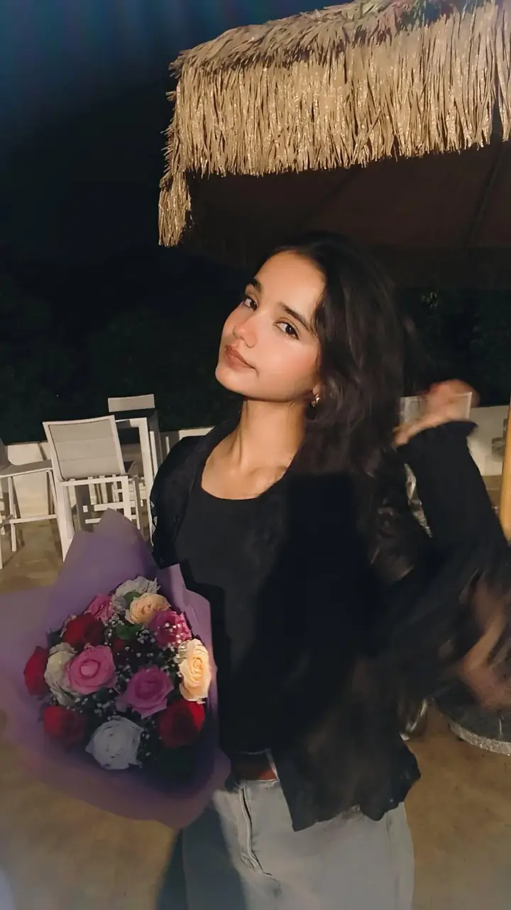

01 · THE HOURS
We made 1 AM
feel like somewhere.
There was a strange little comfort in knowing that, while everyone else was asleep, there was still one person somewhere on the other side of a screen. Sometimes it was important. Sometimes it was completely stupid. It never needed a reason.
the late-night messages
the “look at this” moments
the conversations that quietly became routine
